从官网拿到真实输入
确定商品范围，收集场景图、产品图、SKU 和基础参数。
官网分类页 · 图片 · 参数
AI Workflow · AIGC · Human-in-the-loop
我从开／关灯的轻量体验 Demo 出发，验证灯光能否帮助用户理解空间；再把手动生成里反复出现的判断，整理成可以审核、复用和继续交接的工作流。
体验概念与交互 Demo、三态生图方法、提示词测试，以及任务与审核规则的设计和本地验证。
把已跑通的体验、输入结构和质量标准整理为后续与技术同事对齐批量生产及页面接入的基础。
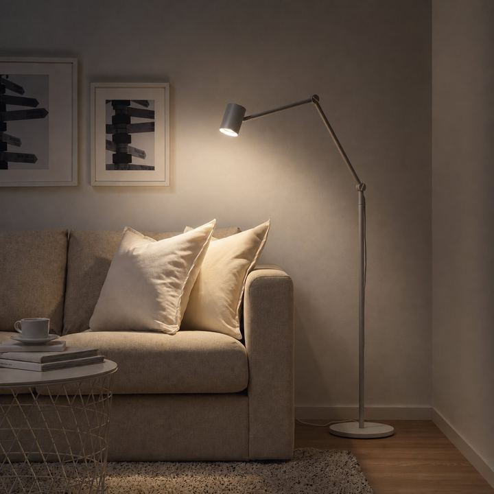
正在加载 16 款灯具体验…
01 · WHY THIS MATTERS
三个已有信号让我把“把灯做得更好看”换成了另一个问题：能不能让用户直接看见，它亮起来以后会怎样改变一个空间？
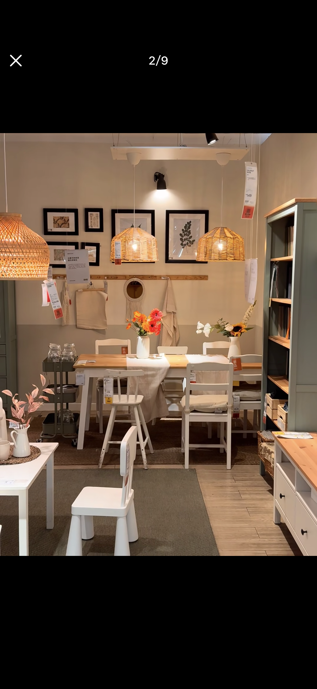
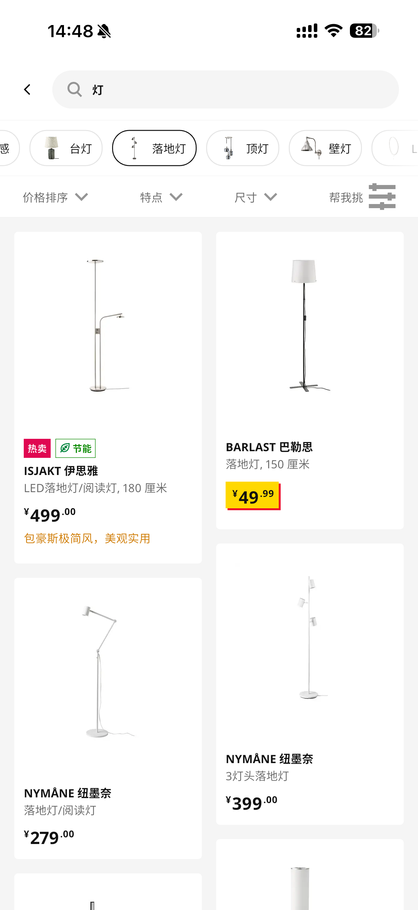
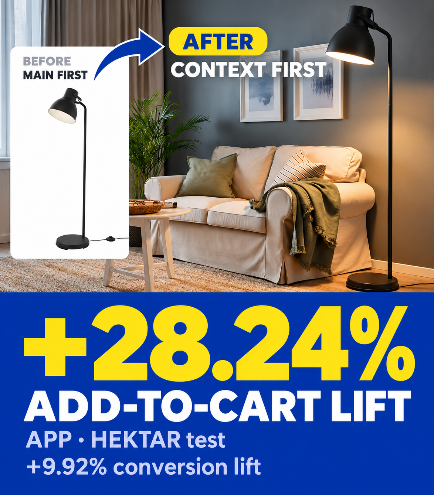
02 · MAKE IT TESTABLE
这一阶段不是追求量产，而是验证两个问题：用户是否能读懂灯光变化；生成是否能保住商品和空间本身。
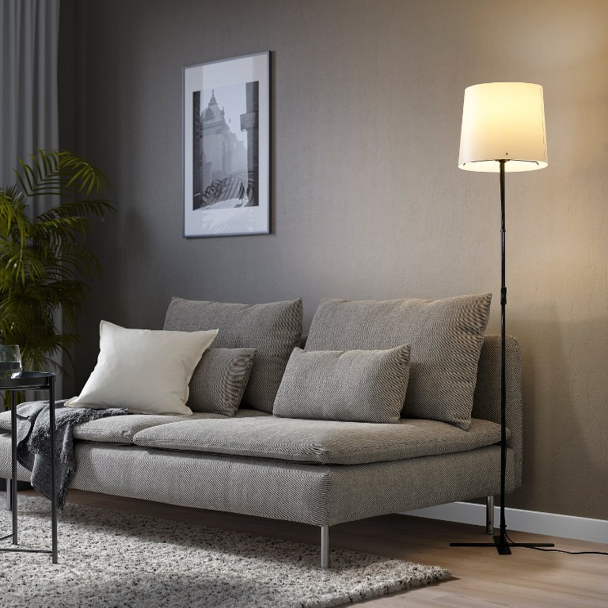
出光方向 光照范围 阴影关系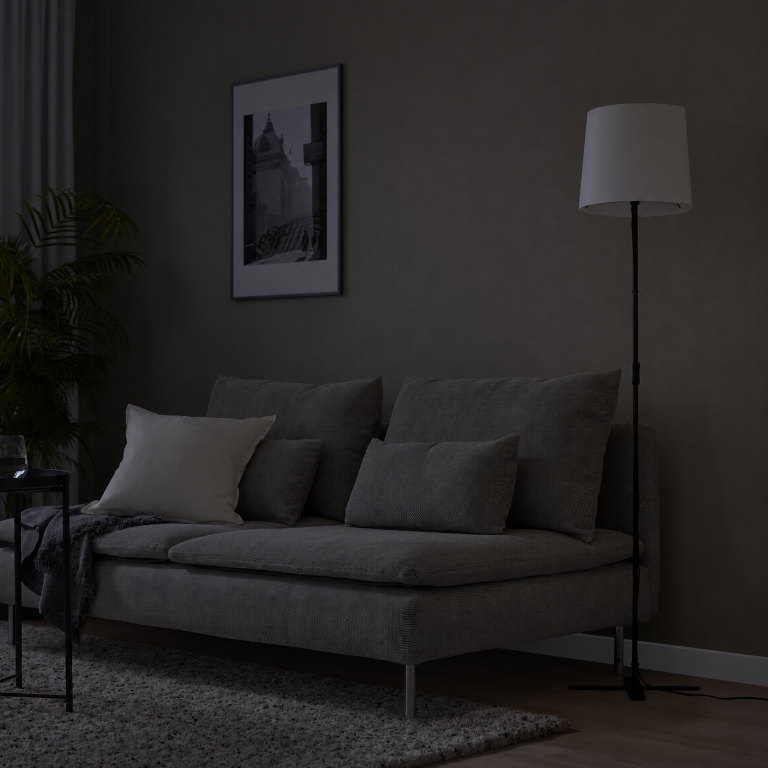
先固定夜晚环境 构图、家具和灯具位置不变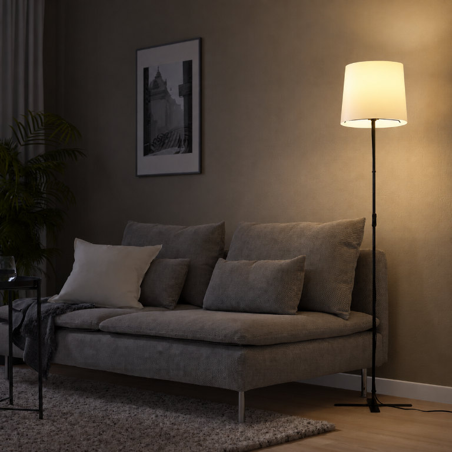
只恢复目标灯具的局部受光先选少量灯具手动测试图像与提示词，再把通过的状态放进可点按的 Demo。
03 · THE TURNING POINT
真正的瓶颈不在“再生一张图”，而在于一套重复、容易遗漏、也难向别人交接的人工判断。
Before
每增加一盏灯，都要重新从素材、判断到归档走一遍。
After
固定步骤交给工作流，真实判断和审核仍由人保留。
确定商品范围，收集场景图、产品图、SKU 和基础参数。
Python 整理素材和命名；每个商品拥有独立工作区与版本记录。
先生成 Night Off，再结合原图生成 Night On。
问题版本退回重做；通过版本自动归档，再进入 Day / Night 展示。
脚本、图像模型和文件系统负责重复动作；我负责定义输入、判断什么是真实、哪里需要重做，以及什么可以进入 Demo。
03B · BOUNDARY TESTS
一开始的测试暴露了三类问题：共享提示词会抹平差异；非常规结构容易让光线失真；模型本身也会带来画面质量漂移。
01 · SHARED PROMPT
同一套通用提示词下，开灯后的结果都被推向相似的暖黄氛围；灯具本身、光照范围和空间气质的差异被“好看”掩盖。
判断不再用一套通用提示词覆盖所有商品，而是为每盏灯写独立的 Lighting Signature。
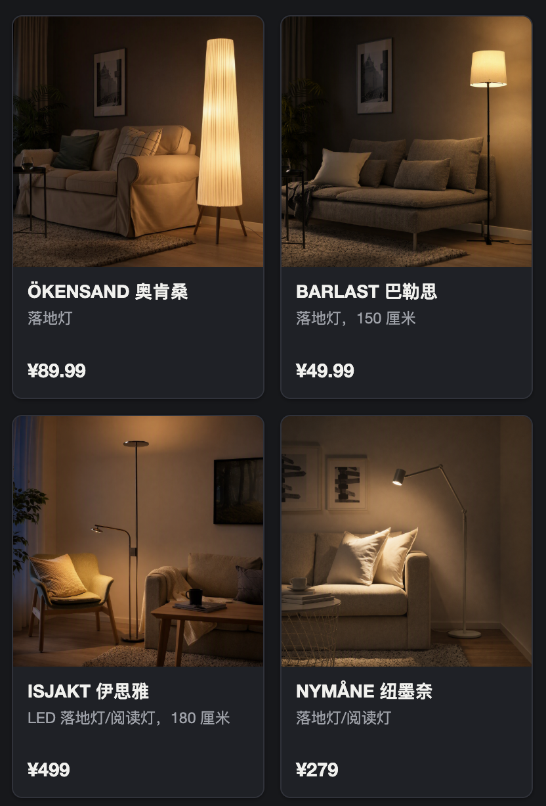
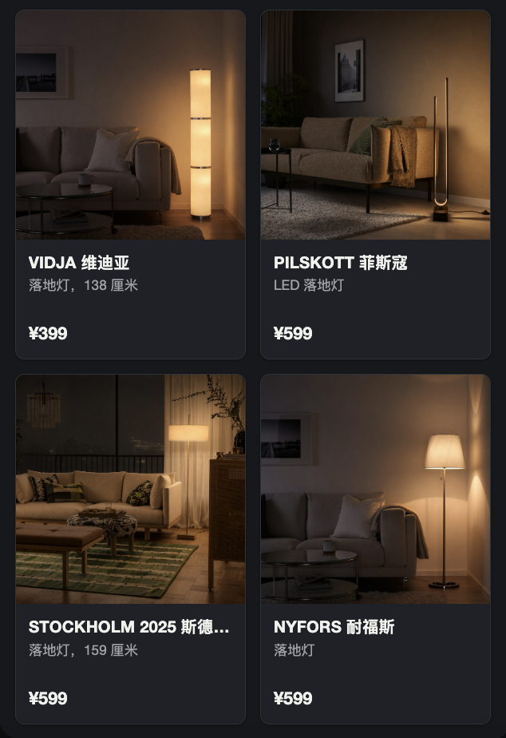
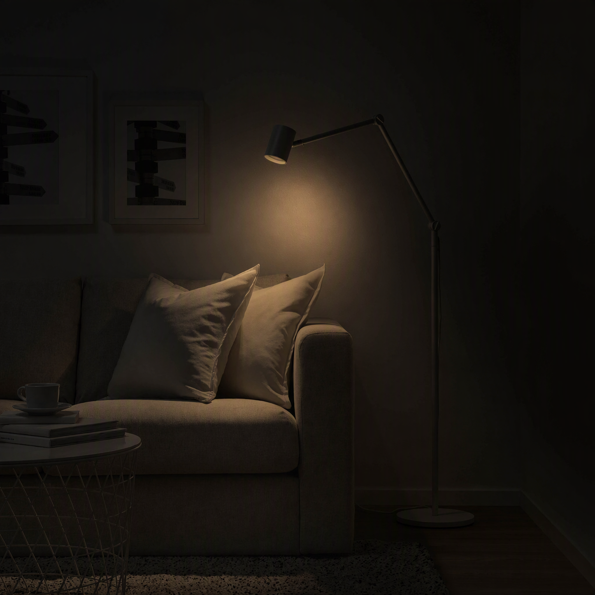
02 · PHYSICAL LOGIC
可调灯的出光方向与光照范围不符合真实结构。
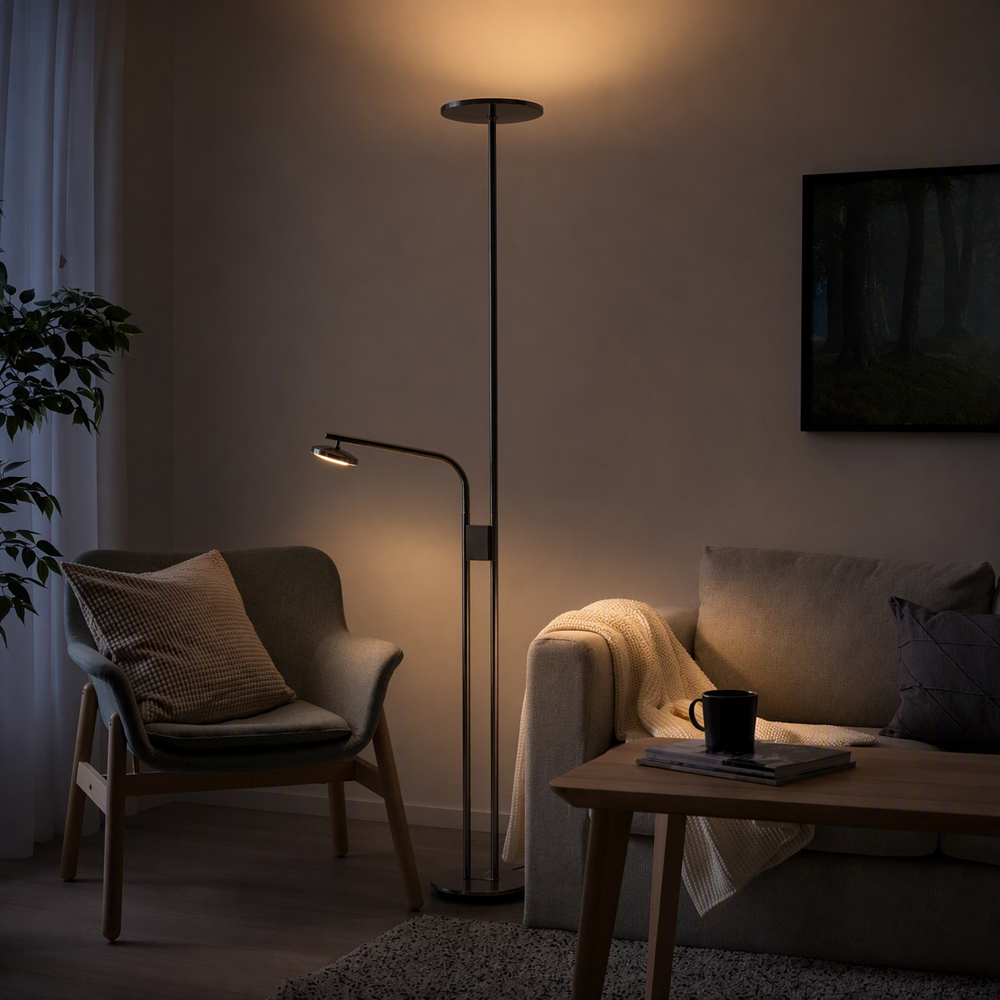
03 · UNUSUAL FORMS
多头、异形灯具难以同时锁定每个灯头与局部光束。
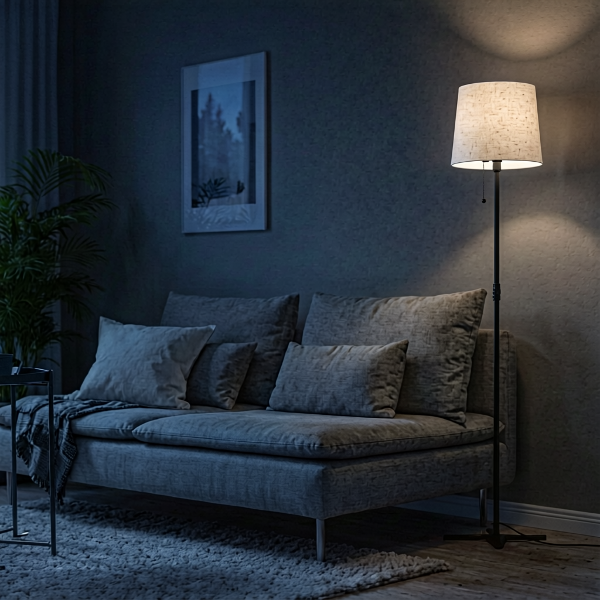
04 · MODEL DRIFT
不同模型可能带来噪点、偏冷色调和材质变化。
FROM EXPERIMENT TO SKILL
每次生成前锁定：灯具结构 · 出光方向与范围 · 环境光与反光 · 审核条件
04 · TURN JUDGMENT INTO RULES
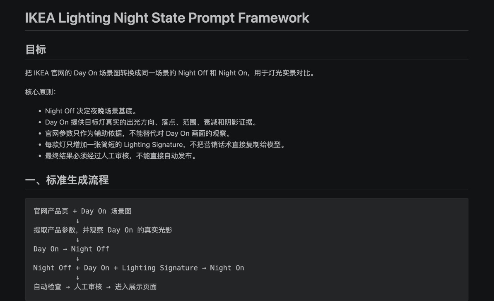
Prompt Framework：目标、核心原则与标准生成流程。
05 · REVIEW, THEN REMEMBER
我把生成方法、输入来源、Lighting Signature、检查、版本和发布边界整理成 Skill。审核中反复出现的问题，不再只修这一张图，而是回写成下一轮任务的规则。
同屏看 Day On、Night Off 和 Night On，把场景、商品结构和光效拆开记录；通过、退回或重做，都有对应的对象与版本。
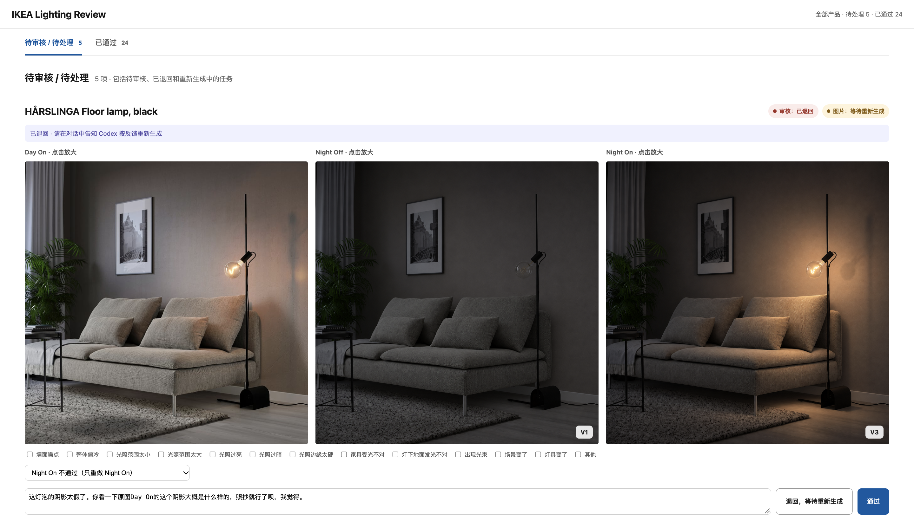
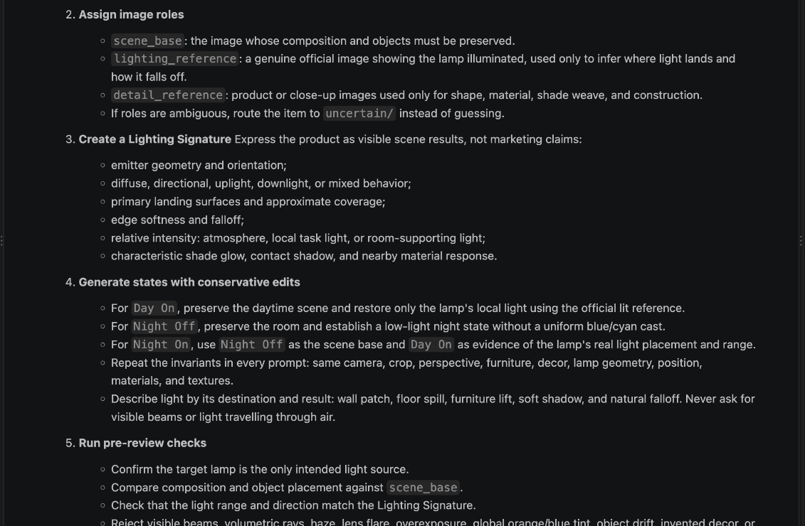
把输入来源、Lighting Signature、检查、版本和发布边界写进同一份规则。
先定位问题场景、商品结构和灯光效果分开记录。
先做局部修正单个商品的问题不立刻改成全局规则。
重复出现再更新 Skill下一轮任务从新的规则继续执行。
06 · WHAT THIS MADE POSSIBLE
16 款灯具的 Day / Night 交互 Demo。
三态生图方法被保存为 Lighting Skill。
新增商品可按同一任务结构跑通；非生产系统，未上线。